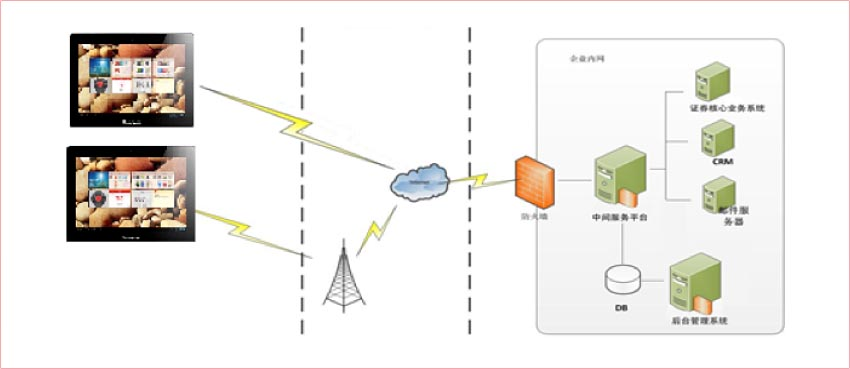
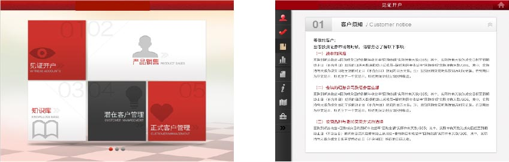
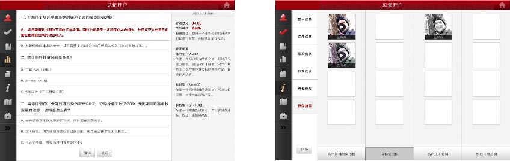
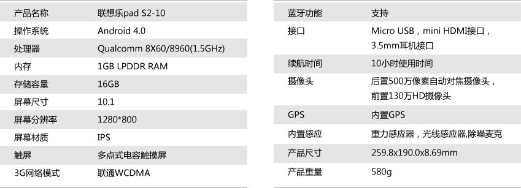

联想非现场开户解决方案
联想的非现场开户解决方案采用基于联想平板电脑作为移动开户终端，通过集成多种外设采集信息，并将信息通过3G网络提交到公司的服 务器中间件，最终通过中间件将数据导入原有后台系统的，此种方案对原有后台系统不做任何修改，从而最大程度地规避了系统再造风险。
证券行业移动应用平台构架
方案特点
应用系统采用C/S方式，客户端主要功能及与服务器中间件进行交互。 服务器中间件、后台管理系统采用J2EE的企业应用平台，各应用组件遵循J2EE标准，对外接口提供Java级别API(EJB、Https/xml、SOAP等接口)。客户端与业务系统的交互全部经过服务器中间件，不直接访问业务系统。
系统接入可采用VPN、VPDN以及软硬件数字证书的灵活组合方式，兼顾安全与成本。
系统功能包括非现场开户、产品展示、开户管理及知识库管理。非现场开户包括实时告知客户须知、进行风险评测
非现场开户包括实时告知客户须知、进行风险评测通过视频进行现场见证并对影响资料进行留存
联想平板硬件配置
客户收益
- 提高开户人便利性开户人无需在柜台、银行和家之间多次往返，可直接 在家中完成所有开户手续，极大地提高客户亲和力。
- 提高一次成功率开户业务员只要现场说服开户人，即可完成开户手续，从而极大提高成功率。
- 降低成本移动开户设备较开户柜台的专用设备价格便宜且可以共享，同时可以大幅节省柜台占地租金、数据外包录入、纸张、电话费等大量办公成本。
- 提高市场份额通过降低成本，公司可以提供更有竞争力的产品，同时通过提高一次成功率可以使公司的业务人员工作更有效率，此外便捷体贴的开户体验也会使开户人更愿意选择此种方式开户。根据保险行业的类似案例，上述组合拳可有效提高公司的市场份额。